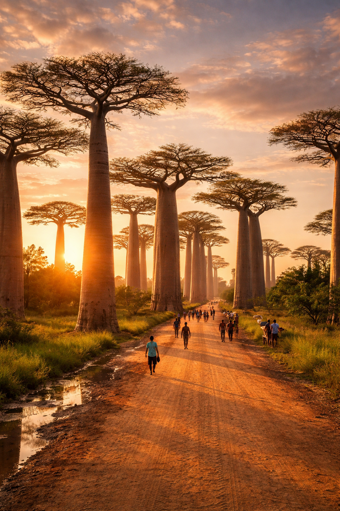

Bienvenue à Morondava
Située sur la côte ouest de Madagascar, Morondava est la porte d'entrée vers des paysages surréalistes et une culture chaleureuse.
Découvrez Morondava
La porte d'entrée vers les merveilles de l'Ouest malgache
Les Lieux Emblématiques
L'Allée des Baobabs
Le site le plus photographié de Madagascar. Ces géants millénaires offrent un spectacle irréel au coucher du soleil.
Le Tsingy de Bemaraha
À quelques heures de piste, explorez ces formations calcaires acérées classées au patrimoine de l'UNESCO.
Belo-sur-Mer
Un village de pêcheurs authentique célèbre pour ses chantiers navals de boutres traditionnels.
Infos Pratiques
- Meilleure période : De mai à octobre (saison sèche).
- Transport : Accessible en avion (Air Madagascar) ou par la route (RN7 puis RN35).
- À ne pas oublier : Crème solaire, anti-moustique et votre appareil photo !
Les Incontournables
L'Allée des Baobabs
Le site le plus photographié de l'île, spectaculaire au coucher du soleil.
Le Parc de Kirindy
Une forêt sèche abritant le célèbre Fossa et plusieurs espèces de lémuriens.
Belo-sur-Mer
Un village de pêcheurs réputé pour la construction de boutres traditionnels.
Conseils Pratiques
- Quand partir : D'avril à novembre (saison sèche).
- Transport : En avion (Air Madagascar) ou en taxi-brousse depuis Tana.
- À ne pas oublier : Crème solaire et anti-moustique !